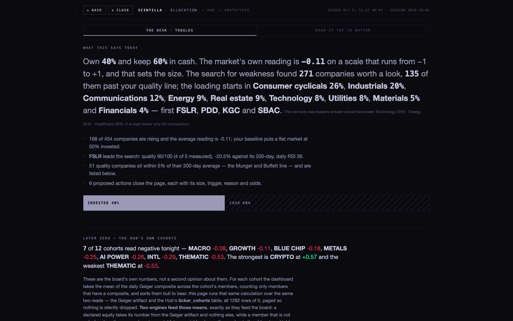
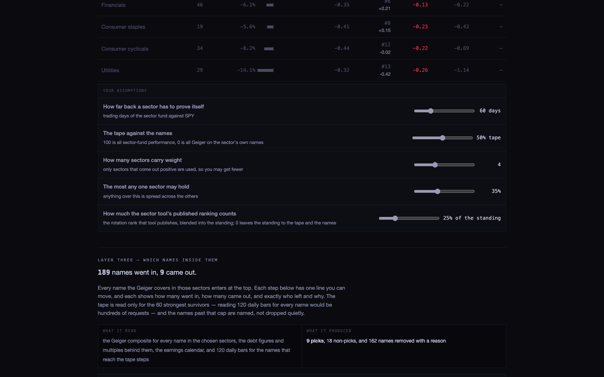
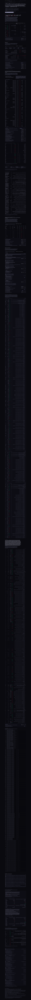
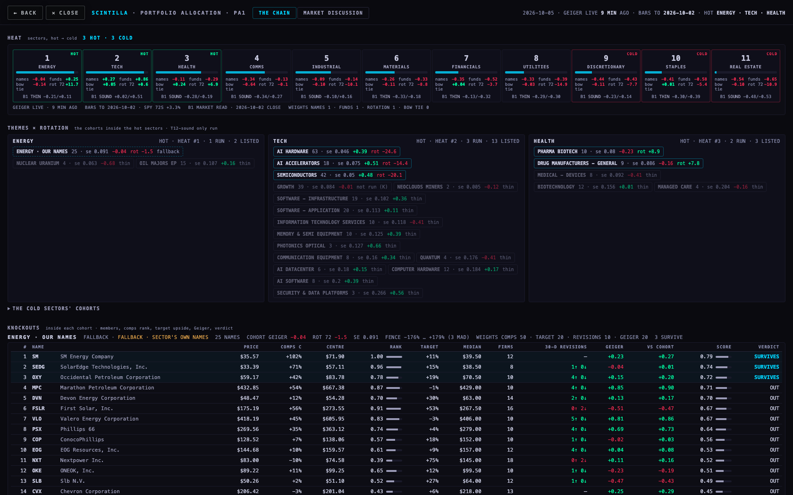
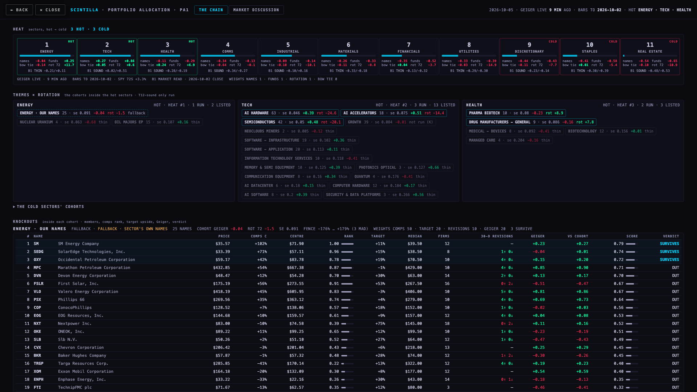
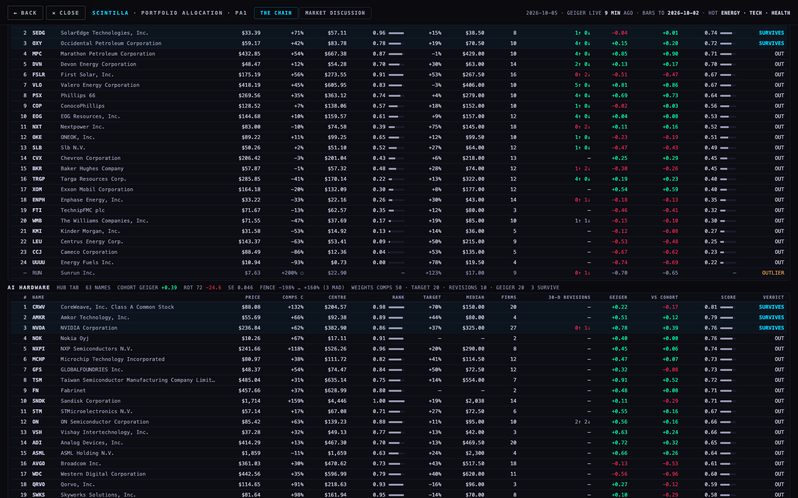
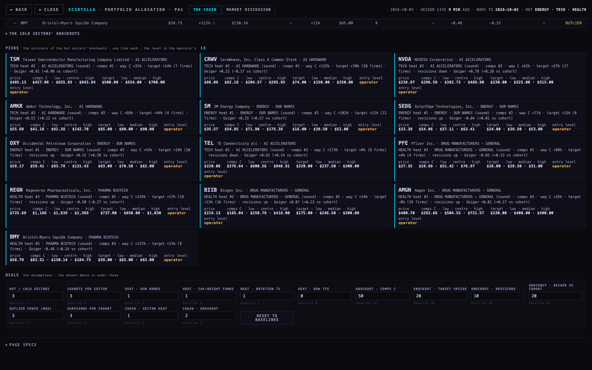
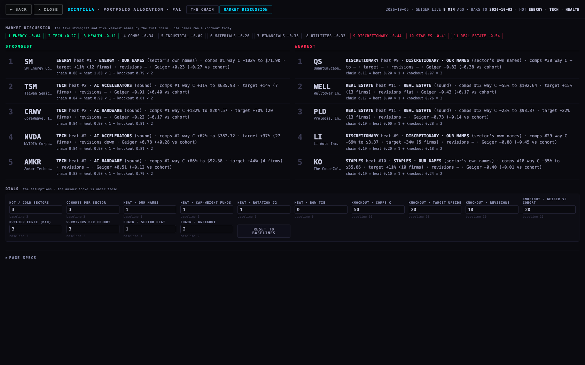
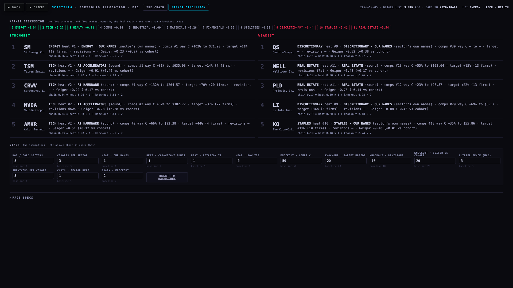

In one paragraph. Portfolio allocation now runs Alan's chain end to end on today's live data: heat from the sector compare (our names, three cap-weight fund families, the equal-weight bow tie, the 72-session rotation, B1's market read where sound) → themes inside the hot sectors (only cohorts T12 calls sound) → a knockout in each cohort on the C5 comps (business-first peers, outliers out, the price from the whole field), A4's cleaned analyst targets, the 30-day revision direction and the Geiger against the cohort → picks with one line of reasons each, the entry level left to the operator. Today, 2026-10-05, the heat says ENERGY, TECH, HEALTH are hot and DISCRETIONARY, STAPLES, REAL ESTATE cold; 9 knockouts ran over 218 names; 13 survive in the hot sectors. One page, two views, every dial with its baseline, 0 table writes.



Pictures: shots/today-allocation-1680.png (the top), shots/today-allocation-1680-slice1..3.png (three screens from the middle), shots/today-allocation-1680-whole-1to16.png (the whole scroll at 1:16 — 53,858 px tall, 51 screens).
What it computes. One number first: "Own 40% and keep 60% in cash." It averages the Geiger composite over 454 served names (−0.11), puts a flat market at 50% invested and moves it by half the reading (→ 44%), then blends in a breadth leg at 30% weight (share of names above their 200-day) to land at 40%. Then it runs TWO searches that disagree and prints both: a "contrarian" search (deep-red names near their 200-day with a quality score ≥ 55/100 and daily RSI ≤ 40 — 271 found, 135 past the line, loading in Consumer cyclicals 26%, Industrials 20%, Communications 12% … first FSLR, PDD, KGC, SBAC) and the "old sixty-day-leaders" search (Technology 35%, Energy 35%, Healthcare 30% — 189 names in, 9 out: TSM, NVDA, TEL, PSX, SM, XOM …), "kept below only for comparison". Nine picks at 4.7% each, six "proposed actions" with "odds" from past episodes, three "oddities" essays (IEF, gold, silver) and a cohort review close the page.
From which inputs. The Geiger of session 2026-10-02 (Friday's close; the Hub's live reading at 11:37 today is not used — XLK reads +0.85 live while the page's Technology "cohort read" is +0.14); the sector rotation tool's published ranking dated 2026-10-02; 50/200-day averages and RSI from provider_indicators_current dated 2026-10-02; 12 cohorts from ticker_cohorts with no soundness test (T12's rule never enters); comps = one number, the name's P/E against the sector median ("29x earnings against the sector's 44x") — not the C5 field, no peers, no outliers, no way C; no analyst target anywhere; no sector compare, no bow tie, no B1 market read; 103 candle reads and 11 table reads per page load.
What it shows. 121,264 characters of prose, 35 headings, 52 dials, 2 tabs ("THE DESK · TOGGLES", "READ IT TOP TO BOTTOM" — the same content twice), universal thresholds everywhere (RSI 40, 5% of the 200-day, quality 55, cash floor 10) presented as lines "you can move", and two answers for the same day. Nothing on it uses what was built since 25 Sep: the sector compare strip, B1's market bow tie, the C5 comps (business-first, outliers out, the price from the whole field), A4's cleaned analyst targets, T12's cohort soundness.
In one line: it is Friday's Geiger averaged, two contradictory stock screens, and 50 screens of explanation — not a chain from heat to picks.






Heat, hot → cold: ENERGY −0.04 names · +0.25 funds · +11.7 rot · TECH +0.27 names · +0.86 funds · +0.6 rot · HEALTH −0.11 names · −0.29 funds · +6.9 rot · COMMS −0.34 names · −0.13 funds · −0.1 rot · INDUSTRIAL −0.09 names · −0.14 funds · −10.1 rot · MATERIALS −0.26 names · −0.33 funds · −8.8 rot · FINANCIALS −0.35 names · −0.52 funds · −3.7 rot · UTILITIES −0.33 names · −0.39 funds · −14.9 rot · DISCRETIONARY −0.44 names · −0.43 funds · −7.7 rot · STAPLES −0.41 names · −0.58 funds · −5.4 rot · REAL ESTATE −0.54 names · −0.65 funds · −10.9 rot.
| pick | ring | price | comps C | target | Geiger | the line |
|---|---|---|---|---|---|---|
| TSM | AI ACCELERATORS | $485.13 | +31% → $635.93 | +14% → $554.00 (7) | +0.91 | TECH heat #2 · AI ACCELERATORS (sound) · comps #1 · way C +31% · target +14% (7 firms) · Geiger +0.91 (+0.40 vs cohort) |
| CRWV | AI HARDWARE | $88.08 | +132% → $204.57 | +70% → $150.00 (20) | +0.22 | TECH heat #2 · AI HARDWARE (sound) · comps #1 · way C +132% · target +70% (20 firms) · Geiger +0.22 (−0.17 vs cohort) |
| NVDA | AI ACCELERATORS | $236.87 | +62% → $382.72 | +37% → $325.00 (27) | +0.78 | TECH heat #2 · AI ACCELERATORS (sound) · comps #2 · way C +62% · target +37% (27 firms) · revisions down · Geiger +0.78 (+0.28 vs cohort) |
| AMKR | AI HARDWARE | $55.69 | +66% → $92.38 | +44% → $80.00 (4) | +0.51 | TECH heat #2 · AI HARDWARE (sound) · comps #2 · way C +66% · target +44% (4 firms) · Geiger +0.51 (+0.12 vs cohort) |
| SM | ENERGY · OUR NAMES (fallback) | $35.57 | +102% → $71.90 | +11% → $39.50 (12) | +0.23 | ENERGY heat #1 · ENERGY · OUR NAMES (sound) · comps #1 · way C +102% · target +11% (12 firms) · Geiger +0.23 (+0.27 vs cohort) |
| SEDG | ENERGY · OUR NAMES (fallback) | $33.39 | +71% → $57.11 | +15% → $38.50 (8) | −0.04 | ENERGY heat #1 · ENERGY · OUR NAMES (sound) · comps #2 · way C +71% · target +15% (8 firms) · revisions up · Geiger −0.04 (+0.01 vs cohort) |
| OXY | ENERGY · OUR NAMES (fallback) | $59.17 | +42% → $83.78 | +19% → $70.50 (10) | +0.15 | ENERGY heat #1 · ENERGY · OUR NAMES (sound) · comps #3 · way C +42% · target +19% (10 firms) · revisions up · Geiger +0.15 (+0.20 vs cohort) |
| TEL | AI ACCELERATORS | $220.06 | +173% → $600.56 | +8% → $237.50 (8) | +0.65 | TECH heat #2 · AI ACCELERATORS (sound) · comps #3 · way C +173% · target +8% (8 firms) · revisions down · Geiger +0.65 (+0.14 vs cohort) |
| PFE | DRUG MANUFACTURERS - GENERAL | $27.35 | +88% → $51.42 | +4% → $28.50 (4) | −0.03 | HEALTH heat #3 · DRUG MANUFACTURERS - GENERAL (sound) · comps #1 · way C +88% · target +4% (4 firms) · revisions up · Geiger −0.03 (+0.13 vs cohort) |
| REGN | PHARMA BIOTECH | $725.69 | +126% → $1,639 | +17% → $850.00 (19) | −0.50 | HEALTH heat #3 · PHARMA BIOTECH (sound) · comps #1 · way C +126% · target +17% (19 firms) · revisions up · Geiger −0.50 (−0.27 vs cohort) |
| BIIB | DRUG MANUFACTURERS - GENERAL | $219.13 | +14% → $250.79 | +13% → $246.50 (16) | +0.07 | HEALTH heat #3 · DRUG MANUFACTURERS - GENERAL (sound) · comps #2 · way C +14% · target +13% (16 firms) · revisions up · Geiger +0.07 (+0.23 vs cohort) |
| AMGN | DRUG MANUFACTURERS - GENERAL | $400.70 | +26% → $504.55 | −0% → $400.00 (19) | +0.01 | HEALTH heat #3 · DRUG MANUFACTURERS - GENERAL (sound) · comps #3 · way C +26% · target −0% (19 firms) · revisions up · Geiger +0.01 (+0.17 vs cohort) |
| BMY | PHARMA BIOTECH | $58.79 | +121% → $130.14 | +11% → $65.00 (9) | −0.48 | HEALTH heat #3 · PHARMA BIOTECH (sound) · comps #3 · way C +121% · target +11% (9 firms) · Geiger −0.48 (−0.24 vs cohort) |
| 1 | SM | 0.86 | ENERGY heat #1 · ENERGY · OUR NAMES (sound) · comps #1 · way C +102% · target +11% (12 firms) · Geiger +0.23 (+0.27 vs cohort) |
| 2 | TSM | 0.84 | TECH heat #2 · AI ACCELERATORS (sound) · comps #1 · way C +31% · target +14% (7 firms) · Geiger +0.91 (+0.40 vs cohort) |
| 3 | CRWV | 0.84 | TECH heat #2 · AI HARDWARE (sound) · comps #1 · way C +132% · target +70% (20 firms) · Geiger +0.22 (−0.17 vs cohort) |
| 4 | NVDA | 0.84 | TECH heat #2 · AI ACCELERATORS (sound) · comps #2 · way C +62% · target +37% (27 firms) · revisions down · Geiger +0.78 (+0.28 vs cohort) |
| 5 | AMKR | 0.83 | TECH heat #2 · AI HARDWARE (sound) · comps #2 · way C +66% · target +44% (4 firms) · Geiger +0.51 (+0.12 vs cohort) |
| 1 | QS | 0.11 | DISCRETIONARY heat #9 · DISCRETIONARY · OUR NAMES (sound) · comps #30 · way C — · target — · Geiger −0.82 (−0.38 vs cohort) |
| 2 | WELL | 0.17 | REAL ESTATE heat #11 · REAL ESTATE (sound) · comps #13 · way C −55% · target +15% (13 firms) · revisions flat · Geiger −0.43 (+0.17 vs cohort) |
| 3 | PLD | 0.19 | REAL ESTATE heat #11 · REAL ESTATE (sound) · comps #12 · way C −23% · target +22% (13 firms) · Geiger −0.73 (−0.14 vs cohort) |
| 4 | LI | 0.19 | DISCRETIONARY heat #9 · DISCRETIONARY · OUR NAMES (sound) · comps #29 · way C −69% · target +34% (5 firms) · Geiger −0.88 (−0.45 vs cohort) |
| 5 | KO | 0.19 | STAPLES heat #10 · STAPLES · OUR NAMES (sound) · comps #18 · way C −35% · target +11% (10 firms) · Geiger −0.40 (+0.01 vs cohort) |
Outliers kicked off today (beyond 3 MAD on comps upside, out of the ranking, shown hollow): ENERGY · OUR NAMES: RUN +200% · AI HARDWARE: MU +316%, QCOM +168%, SIMO +206%, SMCI +264%, TEL +170%, VSAT +274% · SEMICONDUCTORS: MU +321%, SIMO +206% · DRUG MANUFACTURERS - GENERAL: BMY +122% · DISCRETIONARY · OUR NAMES: F +1287%, GM +984%, PDD +1186%, XPEV +711% · STAPLES · OUR NAMES: KR +159% · REAL ESTATE: CBRE +151%.
Geiger: the Hub's live reading (/geiger) for the 590 served symbols and the 44 sector funds, 2026-10-05T15:49:32.495Z. Bars: the chart API's daily bars to 2026-10-02 (today's session is not a finished daily bar, so rotation is as of Friday's close). Comps: C5's method and code on this branch's files (segments pulled on Fly 3 Oct), one table read per ring over the union of the members' sets. Targets: analyst_target_news with A4's quality columns, 3191 clean rows for 169 names. Cohorts and soundness: T12's measured file of 3 Oct. B1: the 2 Oct close. The data file took 11 s, 233 chart API calls and 165 table reads; it is dated and the page prints every age.
What could be wrong: the comps upside depends on the business-first set (a set under two peers is a blank); many upsides are large because the field's centre sits far from the price for whole industries (semiconductors today) — the fence handles the extremes, the rank handles the rest, and the operator reads the centre, not the percentage. A target with few firms is a blank under three. A sector's rotation is its fund's, a cohort's is its median member's. The fallback rings (sector's own names) have no six-close test. The heat moves during the session with the live Geiger; T12 and B1 are dated. Nothing here sizes a position or sets cash: the July MODEL sheet's heat → condition → % invested stays step 1 and was not re-invented.
What was not done: the ALLOCATION master tab still points at /allocation/ — index.html is untouched on this branch (nothing changes on the Hub without Alan's approval). No table was written. The page reads a dated data file built from this Mac; a scheduled rebuild (a Fly job or an edge function) is not set up.
Today it opens the 51-screen page. Options: (a) point the master tab at this page (THE CHAIN), with MARKET DISCUSSION as its second view; (b) keep the old page one click away under the dials for a week; (c) leave the tab as is. Recommendation: (a) — point the tab here; the old page's one useful step (heat → % invested, the July MODEL) comes back as this page's first dial once you have talked it through, not as 50 screens.
Energy is the hottest sector today and has no T12-sound cohort (OIL MAJORS EP fails by a hair: standard error 0.107). The page ran the sector's own 25 served names as a ring marked FALLBACK. Options: (a) keep the fallback, marked, as it is; (b) never run a knockout where no theme is sound and show the sector empty; (c) build the missing Energy theme (OIL MAJORS EP + the integrateds) as a proper cohort so it passes. Recommendation: (a) now, (c) as the next cohort to settle in the tree — a hot sector with an empty ring would start the discussion from a blank, which is the thing this page is for.